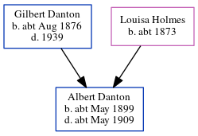

Louisa Mary Danton (née Holmes) c1873 -
[ Home ] | [ Calendar ] | [ Surnames Index ] | [ Errors ] | [ Family History ]Louisa Holmes, the wife of Gilbert Edmund Danton (the first cousin twice-removed on the father's side of Nigel Horne), was born in Lambeth, London, England c. 18731 and married Gilbert (with whom she had 5 children: Albert Victor, Beatrice Maud, John William, Henry Thomas and Eleanor Susannah, along with 1 surviving child) in West Ham, Essex, England around Nov 18961. On 2 Apr 1911, she was living in West Ham1.
Children
- Albert Victor was born c. May 1899
- Beatrice Maud was born c. Oct 1901
- John William was born c. Nov 1902
- Henry Thomas was born c. May 1904
Citations
- 1911 England Census Online publication - Provo, UT, USA: Ancestry.com Operations, Inc., 2011.Original data - Census Returns of England and Wales, 1911. Kew, Surrey, England: The National Archives of the UK (TNA), 1911. Data imaged from the National Archives, London, England. (Marital Status: MarriedRelation to Head of House: Wife)
Family Tree
Map
Generated by ged2site. Last updated on Jul 3, 2024